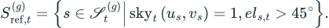
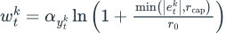

整体概括
让定位观测监督图像，再用图像帮助定位
本文把卫星投影点上的差分伪距残差转成故障标签和训练重要性权重，避免逐像素手工标注。网络输入鱼眼图像并输出密集故障分数图，定位时只在可用卫星的投影位置取值，再调整加权最小二乘的观测贡献。它学习的是环境与观测可靠性之间的关系，不是直接从照片回归接收机坐标，也没有把视觉天空分割简单换个名称。
对照原文证据
We generate point labels and training weights automatically from DGNSS observations using multiple reference satellites selected according to sky visibility and elevation. After removing the geometric range differences, the residuals define observation faults and their importance in training. The loss is calculated only at labeled satellite positions, removing the need for manual pixelwise fault annotations.During training, the network predicts a dense fault probability map from each fisheye image. The predicted probabilities are sampled at satellite projection locations to compute a weighted pointwise loss using the corresponding fault labels and sample weights. This design enables the network to estimate fault probabilities for GNSS observations using automatically generated sparse supervision, without requiring dense pixelwise fault annotations.The predicted probabilities are then sampled at satellite projection locations and used to adjust observation weights in weighted least squares positioning, reducing the influence of potentially faulty observations on the positioning solution.最亮眼结果来自特定城市、跨天与有效解口径
作者在城市车辆数据上用不同于训练日期的测试数据评价，U-Net 的水平 RMSE 为 0.78 m，SAM 二值分割基线为 1.22 m。这里统计的是各方法有效定位解上的误差，同时还存在分割基线无解而点监督仍有解的时段。因此应将误差大小与解的可用性分别看待，不能把这个均值改写为所有时刻的保障，也不应外推成 PPP 模糊度固定性能提升。
对照原文证据
The framework is evaluated using U-Net, DeepLabv3+, DINOv3, and SAM3 on urban vehicle data collected on a different day from the training data.Segmentation 1.22 — 87.37 87.68 U-Net 0.78 36.07 90.29 90.82Compared with SAM-based segmentation, all four point-supervised models achieve lower horizontal root mean square errors (RMSE) evaluated over epochs with valid positioning solutions.The gray regions indicate epochs at which SAM segmentation yields no positioning solution, whereas the corresponding point-supervised model still provides a valid solution.Research gap
同一可见类别内部，误差仍可能完全不同
二值天空分割能回答传播方向是否被遮挡，却不能确定伪距误差大小。可见卫星仍可能同时接收反射信号，非直达误差又随反射几何改变，树冠与建筑也不应一律等价。作者据此把目标从“天空还是障碍物”移到“当前观测是否可靠”，让 GNSS 测量产生的监督帮助视觉模型学习比可见性更细的质量信息。这是本文动机，不代表已完成全领域方法查新。
对照原文证据
Visual visibility does not uniquely determine GNSS observation quality. Even when a direct signal is available, an LOS observation may still be affected by multipath if reflected signals are received simultaneously [ 18 ] . Additionally, the NLOS ranging error varies with the geometric relationship between the satellite and the reflecting surface, and its magnitude cannot be solely determined by the NLOS category [ 19 ] .省掉的是人工密集标注，不是所有监督与数据成本
作者用参考站、车辆观测、图像和参考轨迹自动产生稀疏标签，仅在有效卫星投影点计算训练损失。这样绕开了人工画出每个故障像素的困难，但仍需要高质量离线数据链。尤其真值位置用于固定几何距离，参考星也需筛选，所以它是测量派生的弱监督或点监督方案，不能宣传为无需参考数据、无需真值、仅靠普通单幅图像即可完成训练。
对照原文证据
In the offline stage, SAM generates a sky mask to guide the selection of multiple reference satellites within each constellation. GNSS observations collected at the reference station and the vehicle are used to compute single difference residuals. For each target satellite, double-difference residuals are then constructed with respect to the selected reference satellites and aggregated into an observation fault score. The resulting scores are converted into point labels and corresponding training weights, which are associated with the satellite projection locations in the fisheye image.Accurate computation of the double difference residual also requires precise knowledge of the rover position during label generation. Let \mathbf{x}_{gt} denote the ground truth position of the rover. By fixing the rover coordinates to \mathbf{x}_{gt} , the geometric ranges and their corresponding double differences can be computed deterministically rather than estimated from a potentially degraded positioning solution.Although the model predicts a dense map, supervision is restricted to the satellite observations indexed by \mathcal{V}_{t} . Unlabeled image locations do not contribute to the loss.算法主线

原图由 arXiv 加载；若未显示，可打开下方原图链接。
跟着原图读
- 先把上部标注链与下部训练链分开
上部的参考站和双差残差用于生成监督，下部图像网络学习环境与故障分数的对应。不能从图上参考站箭头推断推断阶段仍输入真值轨迹或已知残差标签。
- 再追踪标签和权重如何进入损失
右侧标签与重要性权重只指导有效点上的训练；稠密热图先在卫星投影处采样。没有标签的像素不被统一当作健康样本。
- 最后区分训练图与实际定位后端
此图主要展示标签生成和点监督，不是完整 WLS 定位计算图。最终观测权重应按正文故障分数补值构造，不能把这里的重要性箭头直接接进定位矩阵。
图中连续热图不是逐像素实测真值，框图也没有证明所有参考星和标签都可靠。应结合短基线、同步与参考轨迹条件解释。
短基线差分与多参考星，先减少标签中的公共误差
离线标注先对参考站与车辆作接收机间差分，再在同星座内相对多个参考卫星双差，以削弱卫星钟、接收机钟和近似公共的大气项。候选参考星需投影到图像天空区域，且高度角超过 45°。作者不是简单相信最高卫星必然干净，而是借视觉与多参考聚合降低单颗坏参考星污染全体残差的风险；这一近似仍依赖参考站和基线条件。
对照原文证据
Under this short-baseline assumption, the ionospheric and tropospheric components are largely common-mode and can therefore be effectively removed through pseudorange double differencing.An unreliable reference satellite may therefore propagate its measurement errors into all double difference observations formed using that satellite.For each constellation g , let (u_{s},v_{s}) denote the projected pixel coordinates of satellite s in the fisheye image. Based on the sky mask, satellites projected onto the sky region are identified as LOS candidates. Among these candidates, only those with elevation angles above 45^{\circ} are retained to form the reference satellite set:Instead of using a single reference satellite, all selected satellites in \mathcal{S}_{\mathrm{ref},t}^{(g)} are jointly used to construct double-difference pseudorange residuals within each constellation.用训练残差确定标签，同时单独构造训练重要性
作者在训练数据的直达观测有符号残差上拟合高斯分布，依据估计均值与标准差构造对称的绝对残差阈值，超阈值标为故障。训练重要性还区分健康与故障类别，并随截断残差的对数增大；截断上限为 20 m，以免极端样本支配归一化损失。阈值标签与重要性权重是不同对象，不能把“大权重”理解为该观测在最终定位时更可信。
对照原文证据
To establish a residual-based labeling criterion, a Gaussian distribution is fitted to the signed residuals of LOS observations in the training data, yielding the estimated mean \hat{\mu} and variance \hat{\sigma}^{2} .Measurements with absolute residuals exceeding \tau are classified as faulty, whereas the remaining measurements are classified as healthy.These weights are applied only to the training loss and are distinct from the observation weights used in WLS.We therefore set r_{\mathrm{cap}}=20 m to prevent residuals beyond this magnitude from further increasing the component of the importance weights that depends on the residual magnitude.密集输出不等于密集真值，未标注像素不参与损失
模型从整幅图像产生连续质量图，但训练只在有效卫星投影处采样，使用按总有效重要性归一化的加权二元交叉熵。未标注位置既不当健康负例，也不直接参与该项监督。密集区域依靠网络空间归纳与预训练表征推断出来，不能把热图每个像素都视为有实测标签验证；边界外推与无卫星经过区域需要额外检查。
对照原文证据
During training, the network predicts a dense fault probability map from each fisheye image. The predicted probabilities are sampled at satellite projection locations to compute a weighted pointwise loss using the corresponding fault labels and sample weights. This design enables the network to estimate fault probabilities for GNSS observations using automatically generated sparse supervision, without requiring dense pixelwise fault annotations.Although the model predicts a dense map, supervision is restricted to the satellite observations indexed by \mathcal{V}_{t} . Unlabeled image locations do not contribute to the loss.Residual-Weighted Loss Function. The importance weights w_{t}^{k} account for class imbalance and give greater emphasis to observations with larger residual magnitudes. The weighted binary cross entropy loss at epoch t is defined aswhere \hat{q}_{t}^{k}=\hat{P}_{t}(\mathbf{p}_{t}^{k}) is the predicted fault probability for observation k . The loss compares this probability with the binary label y_{t}^{k} and is normalized by the total importance weight of the valid observations. A small constant \epsilon>0 is added to prevent division by zero. The same objective is used to train all model implementations.推断得到视觉权重，最小二乘仍使用正常观测与几何
定位时先预测图像故障图，在每颗卫星方向采样，再以故障分数的补值构造对角权重矩阵。随后迭代更新伪距残差和几何矩阵，同一历元内视觉权重保持固定。由此可见，真值和差分标签属于离线训练链，不是推断时已知答案；视觉网络也没有替代 GNSS 观测方程。高风险预测降低测量贡献，但仍需保证保留下来的几何可解。
对照原文证据
For target satellite k , its direction is projected onto the image plane. Let \mathbf{p}_{t}^{k}=(u_{t}^{k},v_{t}^{k}) denote the resulting coordinate. The predicted fault probability of the corresponding GNSS observation is then obtained by sampling the probability map:so that observations with higher predicted fault probabilities receive lower weights. At epoch t , the visual weights of the N_{t} available satellite observations are assembled into the weighting matrixFor WLS positioning, \mathbf{z}_{t} denotes the differences between the corrected pseudorange measurements and the pseudoranges computed from the current receiver state estimate, while \mathbf{H}_{t} is the corresponding geometry matrix. The linearized observation model takes the form [ 7 ]The receiver state is updated by adding the estimated correction, with \mathbf{z}_{t} and \mathbf{H}_{t} recomputed at each iteration. The visual weights remain fixed throughout the iterations within each epoch, controlling the contribution of each observation to the positioning solution.关键公式
原式的关键是两条相反用途的权重链
下方选取双差观测、参考星选择、训练重要性和定位更新的原式。训练时，大残差故障点被强调，以减少严重漏检；定位时，高故障分数反而压低该观测贡献。二者不是同一个权重数组，量纲和归一化对象也不同。若实现中把训练重要性直接塞进定位矩阵，可能会反向强调坏观测，因此复现必须沿数据流逐项核对。
对照原文证据
The larger coefficient assigned to faulty observations increases the loss penalty for missed detections, while the logarithmic term gives greater importance to observations with larger residual magnitudes up to the clipping limit r_{\mathrm{cap}} . These weights are applied only to the training loss and are distinct from the observation weights used in WLS.so that observations with higher predicted fault probabilities receive lower weights. At epoch t , the visual weights of the N_{t} available satellite observations are assembled into the weighting matrix损失仅在有效点归一化，不用通用公式冒充原式
原文规定加权二元交叉熵以有效标签点的重要性之和归一化，并加入小常数避免分母为零；各视觉模型使用相同目标。当前安全公式提取未覆盖该条复杂排版，本页不另写一条通用损失来冒充原图原式，而通过正文证据解释其采样与归一化规则。实际实现还应核对概率的数值截断、空标签批次和输出采样的像素坐标约定。
对照原文证据
Residual-Weighted Loss Function. The importance weights w_{t}^{k} account for class imbalance and give greater emphasis to observations with larger residual magnitudes. The weighted binary cross entropy loss at epoch t is defined aswhere \hat{q}_{t}^{k}=\hat{P}_{t}(\mathbf{p}_{t}^{k}) is the predicted fault probability for observation k . The loss compares this probability with the binary label y_{t}^{k} and is normalized by the total importance weight of the valid observations. A small constant \epsilon>0 is added to prevent division by zero. The same objective is used to train all model implementations.连续权重不自动修复病态几何或提供误差上界
本次没有运行解算器，未确认所有视觉分数接近故障端、有效卫星不足或几何矩阵秩下降时的保护和回退策略。显示的矩阵求逆式是估计更新规则，并不是解必然存在或位置一定安全的证明。工程复现应监控条件数、有效观测数、状态跳变与拒绝输出原因，不能把一个看似平滑的图像热图当作已经校准的观测协方差或定位保护级。
双差观测：把几何项与剩余传播偏差分开
接收机间单差后，再相对同星座参考卫星差分，压低公共钟差与近似公共的大气项。去掉已知参考几何后，剩余量用于构造监督，但仍含目标与参考传播偏差以及测量噪声。
符号与实现提醒
- ∇ΔP / ∇Δρ
- 双差伪距观测与双差几何距离，均以长度计。
- r / b
- 车辆接收机与附近参考站。
- j / k
- 参考卫星与目标卫星，按同一星座构造。
- εMP/NLOS / εrb
- 剩余局部传播偏差与测量噪声，并非全部严格为零。
几何距离在离线标注中使用参考轨迹固定；推断时不能把这一真值输入悄悄保留。公共大气抵消依赖短基线等条件，不是任意距离都成立。
参考星集合：天空可见与高度角条件同时满足

在每个时刻、每个星座内，先用鱼眼天空掩膜筛掉投影受遮挡的方向，再保留满足高度角门槛的卫星。多参考策略降低单个参考误差的牵连，但没有证明被选中的星一定完全无多路径。
符号与实现提醒
- Sref,t(g)
- 星座 g 在时刻 t 的参考卫星集合。
- sky(u,v)
- 投影位置的二值天空掩膜，而非故障标签。
- els,t
- 卫星高度角，门槛使用角度单位。
集合可能随时间变化；无可靠参考星或掩膜错误时必须有明确处理。天空中也可能有反射干扰，不能把可见性当作零误差证明。
训练重要性：按类别和截断残差强调严重故障

类别系数调节健康与故障样本的重要性，截断残差的对数项压缩动态范围，参考残差尺度确保对数内部无量纲。该权重专门作用于训练损失，不是最终定位采用的信任权重。
符号与实现提醒
- wtk
- 标签点的训练重要性权重，无量纲。
- αytk
- 依标签类别选择的系数，故障与健康不同。
- |etk| / rcap / r0
- 残差幅度、截断上限与正的参考尺度，单位均为长度。
需要核对零残差、空有效点集合、总权重归一化与概率数值截断。类别加权目标不自动给出真实人群的无偏故障概率。
视觉观测权重：故障分数越高，定位贡献越低
用预测故障分数的补值作为视觉权重，作用方向与训练重要性相反。这是一种易实现的软降权映射，而不是由误差方差推导出的完整随机模型。
符号与实现提醒
- q̂tk
- 在目标卫星投影位置采样的故障预测分数。
- wt,visk
- 送入当前历元定位权重矩阵的无量纲视觉权重。
分数接近故障端时会产生很小甚至为零的权重。若有效几何退化，柔性降权也不能保证有解；该映射还需独立校准与回退测试。
视觉加权最小二乘：改变观测贡献，不改变坐标观测模型
用对角视觉权重对线性化伪距残差求加权最小二乘状态修正。位置与钟参数在后端迭代更新，同一历元内视觉权重固定；网络本身不直接输出最终坐标。
符号与实现提醒
- H / z
- 当前状态的几何矩阵与纠正后伪距残差向量。
- W
- 各卫星视觉观测权重组成的对角矩阵，不是训练标签权重。
- Δx̂
- 位置与钟相关参数的状态修正；各参数单位取决于状态定义。
逆矩阵存在需要足够有效观测与几何秩。该估计式不等于已校准协方差、保护级或故障风险上界，本次未运行实现。
实验怎么做
济南城市车辆实验，图像与观测严格同步
作者使用车载 GNSS、鱼眼相机与后处理 GNSS/INS 参考系统，观测采样为 1 Hz，测试环境包含林荫道路、高楼街区、下穿与低光照。数据来自中国济南，训练与测试按所列数据集划分且测试日期不同于训练。这个设计提供了时间外移证据，但仍不能等同于跨城市、跨天线、不同鱼眼安装方向或强空间天气下的独立泛化验证。
对照原文证据
For raw GNSS observation acquisition, a NovAtel PwrPak7 measurement-grade receiver was used at a sampling frequency of 1 Hz.the image stream was strictly synchronized with the GNSS time reference.The experimental data were collected in a representative urban environment in Jinan, China. Fig. 4 shows the vehicle trajectories of the three selected datasets (Dataset 1–Dataset 3) projected on Google Earth. The test routes covered challenging urban scenarios, including tree-lined streets, dense urban canyons with tall buildings, underpass sections, and low-light conditions. These environments introduce severe signal blockage and pronounced multipath effects.The framework is evaluated using U-Net, DeepLabv3+, DINOv3, and SAM3 on urban vehicle data collected on a different day from the training data.不同模型不是相同训练自由度，不能只按名称大小排名
U-Net 与 DeepLabv3+ 使用预训练卷积骨干并全量微调，DINOv3 也进行全量微调；SAM3 则冻结视觉编码器，只训练新的密集预测头。它们共享点标签与损失，但可更新参数和预训练任务不同。因此结果可以说明该点监督接口适配多种表征，却不能单凭最终排名断言视觉基础模型整体无用，或把冻结适配与全量微调当作严格同预算竞赛。
对照原文证据
U-Net ImageNet-pretrained ResNet-34 Progressive upsampling decoder with skip connections and a convolutional prediction head Full fine tuning. DeepLabv3+ ImageNet-pretrained ResNet-34 Atrous spatial pyramid pooling (ASPP), shallow feature fusion, and a convolutional prediction head Full fine tuning.DINOv3 DINOv3 ViT-S/16 with self-supervised pretraining Fusion of intermediate Transformer features followed by progressive upsampling and a convolutional prediction head Full fine tuning.SAM3 provides pretrained visual representations learned from detection and segmentation tasks. We retain its pretrained visual encoder as a frozen feature extractor and train a new dense prediction head using the proposed point-level loss. This configuration evaluates the transferability of segmentation-related structural representations to GNSS observation fault prediction when task adaptation is restricted to the prediction head.训练成本、概率校准和独立故障真值尚未实测
本次未运行网络训练或定位代码，没有核实批量大小、学习率、种子重复、实际推断时延及标定误差敏感性，也没有取得与残差标签独立的传播路径真值。不能把残差阈值分类准确视为物理故障概率校准。复现时应固定训练数据与阈值拟合范围，同时报告观测级判别、概率可靠性、定位误差与无解率，而非只重现一个平均误差。
提升与证据
水平 RMSE 降低，但统计以有效定位解为条件
测试表中 U-Net 的水平 RMSE 从 SAM 分割基线的 1.22 m 降为 0.78 m，对应 36.07% 降幅。作者明确说明 RMSE 在有有效定位解的历元上评价；不同方法的有解集合可能不完全相同，不能默认为已在同一完整时间序列上公平消除了所有失效。应同时交付共同历元误差、各自有效解误差和无解时间，才能判断收益来自误差压制还是样本口径变化。
对照原文证据
Segmentation 1.22 — 87.37 87.68 U-Net 0.78 36.07 90.29 90.82Compared with SAM-based segmentation, all four point-supervised models achieve lower horizontal root mean square errors (RMSE) evaluated over epochs with valid positioning solutions.较低 RMSE 不意味着每个误差阈值都更优
表中 DINOv3 的水平 RMSE 为 0.81 m，低于分割基线的 1.22 m，但小于 3 m 的比例为 85.99%，低于基线的 87.37%；SAM3 对应比例为 84.65%。这说明平均平方误差与阈值内比例不是同一指标，模型不能按单个数字全面排名。该表也需结合无解历元的统计口径解读，不能据较低 RMSE 宣称所有尺度的成功率都提升。
对照原文证据
Method Horizontal RMSE (m) Improvement (%) <3 m (%) <5 m (%) Segmentation 1.22 — 87.37 87.68 U-Net 0.78 36.07 90.29 90.82 DeepLabv3+ 0.82 32.79 89.20 89.95 DINOv3 0.81 33.61 85.99 86.45 SAM3 0.86 29.51 84.65 85.31图像质量图与更长可用时段是两类补充证据
作者展示树冠内部不同残差对应不同故障分数，说明视觉模型并非必须把整片非天空都视为同等风险。定位时序图则标出二值分割无解而点监督仍有解的部分时段，支持柔性降权比一刀切筛选保留更多观测的可能性。但这些可视化仍是选定场景与单段测试，不提供全局概率校准、所有遮挡条件下的失效风险或每次保留观测都正确的保证。
对照原文证据
This indicates that the point supervision framework does not uniformly consider the tree covered areas as high risk, but forms different risk estimations within the same non-sky category.The gray regions indicate epochs at which SAM segmentation yields no positioning solution, whereas the corresponding point-supervised model still provides a valid solution.
原图由 arXiv 加载；若未显示，可打开下方原图链接。
跟着原图读
- 先分开两条色标，不把热图颜色读成米
原图上的卫星点按绝对双差残差着色，下方网络图的颜色是预测分数。两者量纲不同，不能把红色热图直接换算为伪距偏差或定位误差。
- 再看树冠列内部的差异
二值 SAM 掩膜将大部分树冠判为非天空，而点监督模型在树冠内部仍给出不同分数。应在实际卫星标记位置比较，而不是因整个区域颜色有层次就认定未观测像素全部正确。
- 最后比较纹理，不把视觉平滑等同概率校准
不同模型在遮挡边缘呈现平滑带或碎片化高低分，反映表征与训练策略差异。这里是选定场景的定性结果，需结合独立观测与最终定位指标判断效果。
密集输出由稀疏标签学习，不提供整个视场的独立真值。相同视觉类别不代表相同残差，也不能仅凭热图断言物理传播路径已识别。

原图由 arXiv 加载；若未显示，可打开下方原图链接。
跟着原图读
- 先在每组内按同一时间对齐东、北、天
横轴为时间，纵轴为米，不同彩色曲线对应各自图例。四组分别对比不同点监督模型，不能跨组凭颜色直接认定同一算法，更不能用水平 RMSE概括天向误差。
- 再看灰色竖带与异常尖峰
灰带标注的是相对分割基线的解可用性差异，不是低误差保障。部分时段仍有尖峰，应分开统计共同有解历元、各自有效解和无解持续时间。
- 最后核对曲线与结果表的分母
时序图能定位局部差异，无法单独给出可泛化均值或故障概率。原文 RMSE 按有效解评价，应回表格核对而不是从低清曲线估读精确改善幅度。
这是选定测试数据的逐历元位置误差，不是 PPP 固定率或安全保护级。无解减少与误差降低是不同收益，不能只用一个数字替代。
局限与追问
标签不是无误差真值，短基线和干净参考星都需要检查
差分残差只有在大气足够共同、参考站环境较好、参考星可靠且参考轨迹准确时，才主要反映目标星的局部传播误差。作者也保留了测量噪声和未建模误差的成分。若这些条件失效，视觉模型可能学到标注链的系统偏差，而不只是城市多路径；因此不能直接把同一训练配方搬到长基线、强电离层梯度或参考站本身异常的采集环境。
对照原文证据
Under this short-baseline assumption, the ionospheric and tropospheric components are largely common-mode and can therefore be effectively removed through pseudorange double differencing.When the reference satellite j is selected from reliable LOS observations, its propagation error at the rover is assumed to be small.The resulting residual e_{t}^{k,(g)} primarily reflects the propagation error associated with satellite k , while also containing residual measurement noise and other unmodeled errors.密集概率图更像任务分数，不能省去独立校准
网络用类别不对称且与残差严重度相关的损失学习，输出分数对定位降权有用，并不由此天然等于未加权人群中的真实故障发生频率。未标注像素也不直接参与监督。本站据此提出校准追问：需在独立观测点检验可靠性曲线与跨环境偏移，再决定如何映射到随机模型；这不是断言论文分数必然失真，而是区分优化目标与概率解释。
对照原文证据
The larger coefficient assigned to faulty observations increases the loss penalty for missed detections, while the logarithmic term gives greater importance to observations with larger residual magnitudes up to the clipping limit r_{\mathrm{cap}} .Although the model predicts a dense map, supervision is restricted to the satellite observations indexed by \mathcal{V}_{t} . Unlabeled image locations do not contribute to the loss.where \hat{q}_{t}^{k}=\hat{P}_{t}(\mathbf{p}_{t}^{k}) is the predicted fault probability for observation k . The loss compares this probability with the binary label y_{t}^{k} and is normalized by the total importance weight of the valid observations. A small constant \epsilon>0 is added to prevent division by zero. The same objective is used to train all model implementations.相机失效、域迁移与连续运行回退还需要独立测试
本次未验证镜头水滴、结霜、眩光、严重夜间曝光、时间偏移及相机外参变化对输出与位置的影响，也没有测得网络掉线时的回退行为。跨天测试不足以覆盖这些工程状态。持续部署应记录图像可用性、观测投影有效性、输入分布变化与每次拒绝输出原因，建立可诊断的故障路径，再评估是否值得加入现有定位系统。
连接你的研究
连接 ROTI 与定位恢复：把城市遮挡和电离层异常分成两路证据
可让视觉分支描述局部遮挡与反射，另用 ROTI、周跳、失锁和弧段连续性描述电离层及信号异常，在独立风暴和未见街区比较单路与联合降权。固定定位解算器，交付共同历元位置误差、无解率、重收敛时长、误差尾部与告警校准。训练标签应核对短基线大气近似，不能把所有残差增大都归咎于图像可见环境。
连接高效训练：同骨干、同预算比较冻结与全量适配
可在同一相机数据和划分下，对同一预训练骨干分别训练预测头、轻量适配模块与全量参数，并加入无预训练的小模型基线。控制更新次数和标签采样，按未见道路、时段与设备留出，交付训练显存、时延、样本效率、独立观测校准和最终定位收益。这样才能回答预训练与适配策略各自贡献，而非用模型名气替代可复现比较。
来源与边界
原图来自固定版本的 arXiv 官方图源，作者及图注已保留；外部嵌入不自动授予转载权。本站不镜像作者图片、PDF 或全文，另行转载须核对许可。外部原图受读者网络条件影响；图后解说由 AI 生成，仍需回原文核验。本篇为 arXiv 非独占分发许可，不是 CC BY；本站不镜像作者图片或全文，官方原图仅外链逐图评述，其他转载仍须确认权限。
对照原始英文摘要
收录历史：2026-10-20
原文许可：查看本版本许可 ↗；外部嵌入不等于任意转载授权。